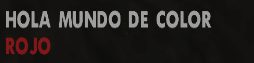

Ademas de poder crear campos de textos, tambien puedes cambiar las propiedades de su color, esto mediante unos simbolos que se colocan al principio de una palabra/frase de esta forma:
0ADF: add_dynamic_GXT_entry '_TEST' your_text "Hola Mundo de Color ~r~Rojo~s~"
El texto que tenemos guardado en "_TEST", mostrara "Hola Mundo de Color Rojo"
omitiendo los simbolos (~) y todo lo que se encuentre en su interior.
Por
ejemplo, mostrando se asi en una caja:

|
Codigo: ~W~ ~L~ ~R~ ~G~ ~B~ ~Y~ ~P~ ~S~ ~N~ ~K~~EJEMPLO~ |
Descripcion Blanco Negro Rojo Verde Azul Amarillo Purpura Cerrar Colores Nueva Linea Llamar otro GXT |
|---|
Esto puede ser muy util para usarlo como resaltador de misiones o palabras de suma importancia, como el Rojo, que puede ser utilizado para nombrar a alguien que debemos atacar, entre otras cosas.